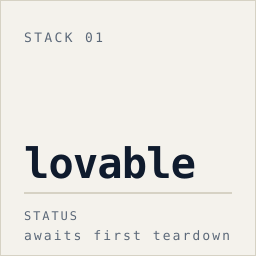
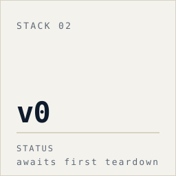
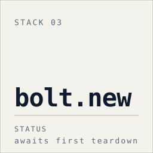
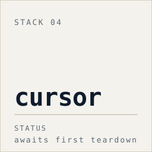
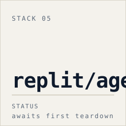

lovable awaits first teardownIf you've shipped something built by Lovable, v0, Cursor, Bolt.new, or Replit Agent, this is for you. Even if you've never opened a terminal in your life.
If you used a vibe-coding tool — Lovable, v0, Cursor, Bolt.new, Replit Agent — and your app is live, this is for you. You don't need to be technical. You need to know which kinds of problems get shipped by default in your tool's scaffold, and which two or three matter most.
If you've ever wondered whether the speed of these tools comes at a cost, the answer is yes, and the cost is specific. It's not "AI-generated code is bad." It's that each tool has a few defaults that quietly ship broken in 70 percent of apps, and those defaults are knowable. This project names them.
If you're a non-technical founder who hired someone to vibe-code your MVP, you need to know what to ask them about. Send them the hub. Ask them to run one verify command per finding. If they can, you're fine. If they can't, that's its own kind of answer.
The project is a public, growing library of audits — one per AI coding tool. Each audit takes a real app generated by that tool, opens it up, lists every problem it found shipping by default, and pairs each problem with the patch that fixes it and the one command you can run to confirm the fix worked.
The audits don't lecture about vulnerability categories. They name the specific mistakes specific tools make. Generic AI-security advice doesn't tell you where to look first. Named-tool patterns do.
That's one well-attested pattern from one tool. The hub's pattern files name failure-mode patterns for each of the five named stacks; pattern claims fill in as audits accumulate — a pattern entry requires N=3+ independent teardowns of that stack confirming the same shape. Every patch ships MIT-licensed. Use it.

lovable awaits first teardown
v0 scheduled
bolt.new scheduled
cursor scheduled
replit/agent scheduledThis page is the slow path in. The hub is denser, more cited, more technical. If you're ready, that's where the actual findings are — every patch, every verify command, every named pattern.
The hub documents the six-step audit protocol in full. Here's the same protocol rendered as three movements, no jargon required.
01 ── Blueprint. We start with a real scaffold — an app generated by the tool we're auditing, using the same onboarding flow you'd use. We anonymize it, commit it untouched as the baseline, and treat it as if a real founder had just shipped it.
02 ── Inspection. We open it up — every secret, every authentication path, every API endpoint, every default config. We trace what would happen if someone hit each route from a browser, from a different user's session, with malformed data. We catalogue everything we find.
03 ── Punch list. Every problem gets a patch. Every patch gets one command you can run to prove the patch worked. Then we name the tool-default pattern behind it — why this kind of mistake gets shipped by this kind of tool. That's how one anonymized audit turns into a tool-wide writeup.
The audit queue starts with Lovable — the third-party scan above puts the most-attested default failure at roughly seven of ten apps. The shape of the broader problem is what this project will document: each tool's onboarding wizard ships a specific set of defaults that quietly break in production, and those defaults are knowable by tool.
When the first teardown lands, the hub documents each finding with its patch and its one-line verify command. The numbers below fill in as audits ship; the empty rows hold their shape rather than disappear.